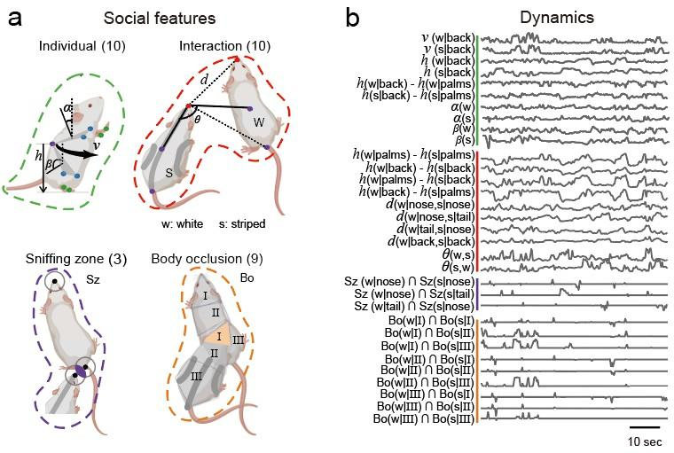

Social Label Sequencing
Social Feature Design
Obtaining the long-term body coordinate points of two animals provides the foundation for exploring animal social types through their trajectory changes. Based on these coordinate points, we designed a series of features (32 in total) to better showcase social characteristics.
This includes 10 features of the animal's own movement. Considering that social behavior has unique interaction patterns, we also designed 10 interactive features between the two. During social exploration, rats exhibit many head and genital sniffing behaviors to familiarize themselves with each other. Therefore, we defined circular sniffing areas for the head and genitals and constructed 3 features to distinguish sniffing sites. During play fighting and mating mounting, rats exhibit overlapping of body trunks, so we designed 9 body overlap features.

Social Feature Clustering
We cut social videos into 0.8-second time windows, obtaining high-dimensional features (32 features x 24 frames). We then used a Seq2Seq autoencoder model based on RNN to extract spatial and temporal features of behaviors, which can distinguish behavior types with different appearances and movements. The潜features encoded by the decoder were reduced to 90% variance explainability (first 12 PCs) using PCA. Using K-means unsupervised clustering, we obtained approximately 40-50 behavior categories.
For each behavior category, we observed typical video clips and performed manual annotation. Through this process, many familiar social behavior types were successfully clustered, such as sniffing, chasing, approaching, leaving, and playing, comprehensively covering rat social patterns. By projecting behavior categories in a two-dimensional UMAP space, we constructed a more visualizable social behavior atlas. In the UMAP social atlas, different major behavior categories are separated into their respective regions, with adjacent regions showing similar behaviors. Even similar behaviors have subtle differences in features, which are more detailed than manually set criteria. Therefore, the automated clustering method can partially replace manual observation of behaviors without manual annotation.

Social Consistency Clustering Optimization
During the detailed review of behavior classification results, this study identified atypical clips in some categories that were inconsistent with expected behaviors from manual annotation. The inherent characteristics of social behavior provide unique conditions for optimization algorithms, allowing the same social interaction to be viewed from different individual perspectives. The same social interaction clip is labeled from two different role perspectives (2 labels), and consistent labels make the classification of that clip more reliable. This study classified social behaviors from the perspectives of white and black rats, obtaining dual labels, and identified consistency matching relationships between these labels. Among the 42 behavior categories, 36 complementary behaviors were automatically screened out. These 36 categories are called reliable clustering categories. The neural network was then retrained to reclassify all video clips into the 36 reliable clustering categories.